Critical gaps for individual and group pedestrians at an unsignalized crosswalk
Using field video, we analyzed at what distance and time gap pedestrians decide to cross in front of vehicles at an unsignalized crosswalk. We compared individual and group pedestrians before and during the crossing.
Period
2023.01–2023.05
Team
Team of two, DoSeeThink
Role
Site and observation criteria design, video-based distance and time reading, Accept/Reject labeling, individual vs group analysis
Awards
First place at the graduation exhibition, Korea Transport Institute President’s Award, College of Engineering Dean’s Award
17 h 8 minField video
916Lag observations
Individual / GroupCrossing acceptance compared
01 / METHOD
Separate gaps for each stage of the crossing
Instead of treating a crossing as one decision, we observed three intervals: the distance to an approaching vehicle before crossing, the time gap between vehicles during the crossing, and the distance to oncoming vehicles after the centerline. The two lanes nearest the pedestrian are Zone 1; the two far lanes are Zone 2.
STEP 1
Before crossing
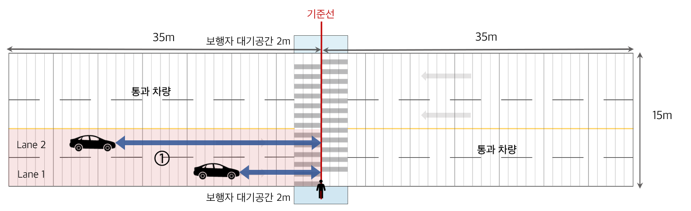
Zone 1 / Lag
We read the distance between the reference line and the approaching vehicle in the near lanes.
Reject
Waits in the waiting area
Accept
Starts from the waiting area
STEP 2
During crossing
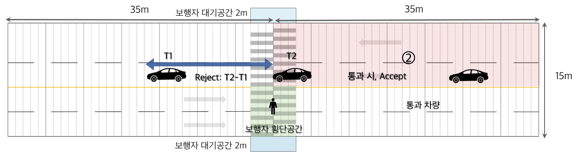
Zone 1 / Zone 2 / Gap
We record T2 − T1, the difference between the times the leading and following vehicles pass the same reference line. The figure shows a Zone 2 example.
Reject
Does not use this vehicle gap
Accept
Crosses through this vehicle gap
STEP 3
After the centerline
Zone 2 / Lag
At the centerline, we read the distance between the reference line and the oncoming vehicle.
Reject
Waits at the centerline
Accept
Starts from or continues past the centerline
Labels in the original diagrams are in Korean. The red vertical line is the reference line, the light-blue boxes are the 2 m pedestrian waiting areas, and the yellow line is the road centerline.
Critical lag critical distance for the crossing decision
Lag is the distance from the reference line to the approaching vehicle at the moment the pedestrian decides whether to cross. The critical lag comes from the distributions of accepted and rejected distances.
Critical gap critical time gap for the crossing decision
Gap is the time from when the leading vehicle passes the reference line until the next vehicle arrives. The critical gap comes from the distributions of accepted and rejected time gaps.
Individual: one pedestrian / Group: two or more people walking together.
Show zones and observation items
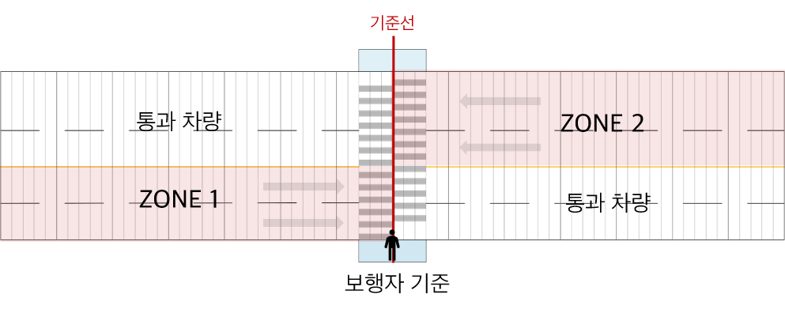
Zone 1 and Zone 2 define which vehicles to observe, depending on where the pedestrian is on the crosswalk.
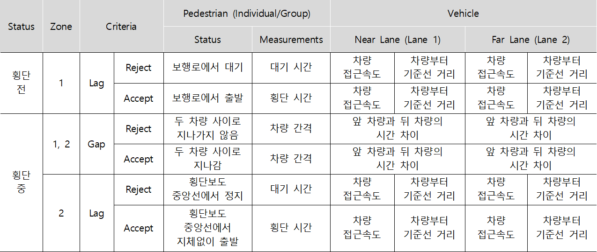
02 / DATA
Turning field video into data
We chose a four-lane unsignalized crosswalk near Boramae Hospital Station. The site limits the influence of intersections, bus stops and visual obstructions, and allows filming from a high position.
Field video
17 h 8 min 5 s
April 3–10, 2023
Lag observations
916
675 Accept / 241 Reject
Measurement range
About 35 m on each side of the reference line
Pedestrian waiting area
2 m in front of the crosswalk
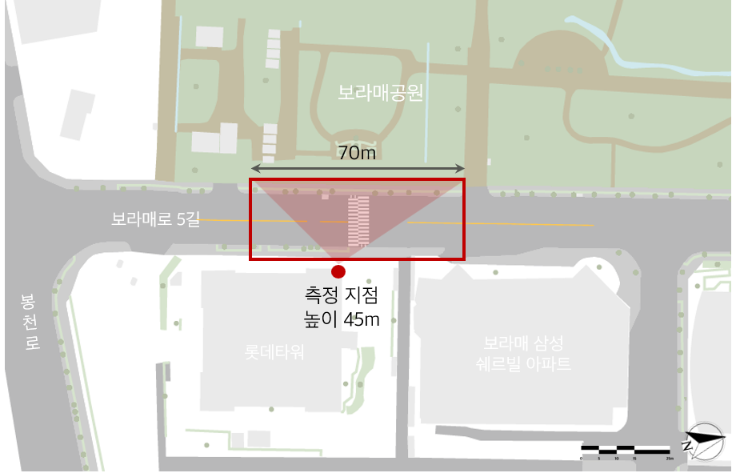
Study site and camera positionWe filmed the unsignalized crosswalk near Boramae Hospital Station from about 45 m up a building.
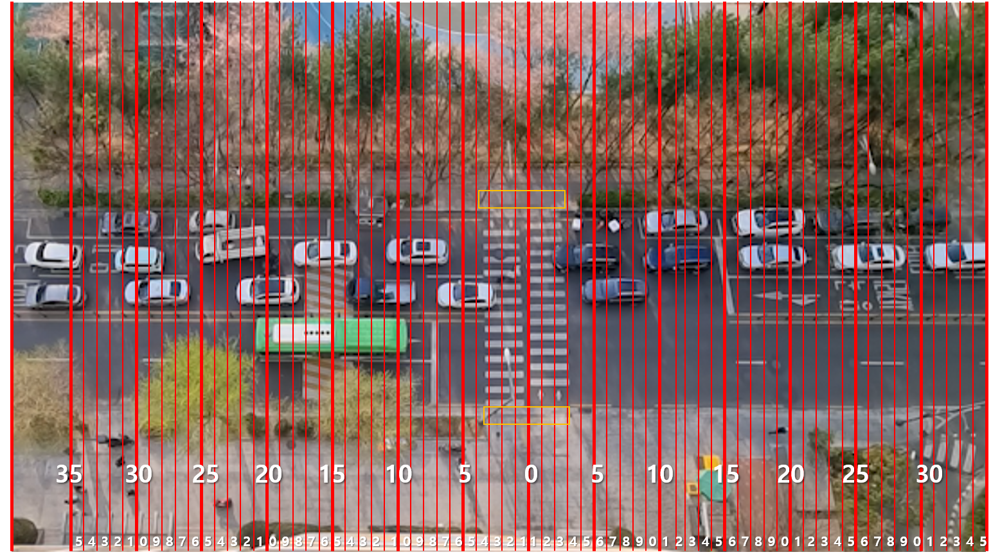
Reading distance from videoWe built a 1 m grid on the video from landmarks measured on site.
Accept and reject counts are based on the lag observations.
03 / RESULT
Individual vs group crossing acceptance
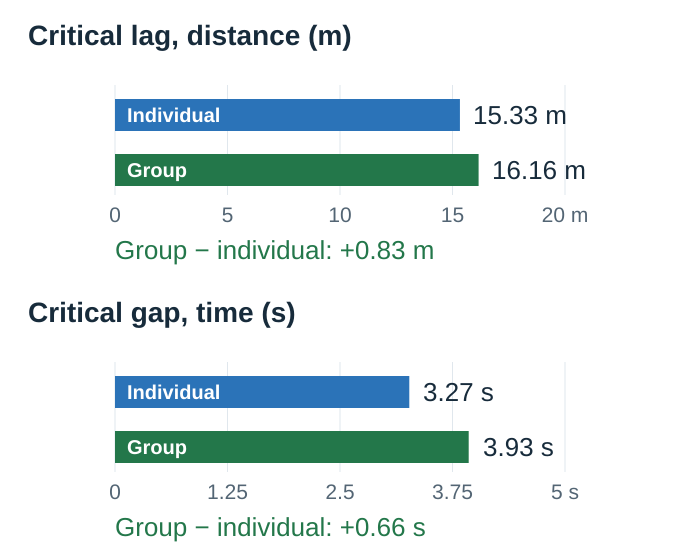
Critical distance and critical time gap for individual and group pedestrians.Show critical lag and gap values
Pedestrians
Critical lag (distance)
Critical gap (time)
Individual
15.33 m
3.27 s
Group
16.16 m
3.93 s
Groups needed a longer distance and a longer time gap
The group critical lag was 0.83 m longer and the critical gap 0.66 s longer than for individuals. In the same crossing environment, individuals and groups accepted crossings on different terms.
Show the analysis method / Raff cumulative distributions
The critical value is where the cumulative curve of accepted gaps meets the reverse cumulative curve of rejected gaps. The graphs below show distance and time for individuals and groups. In each graph, the rising curve is the accepted cumulative share and the falling curve is the rejected share.
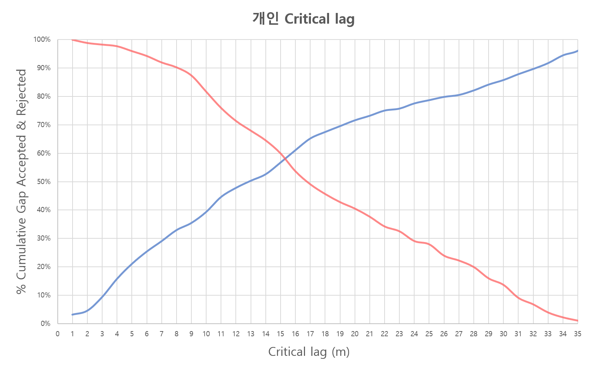
Individual / Critical lag / 15.33 m
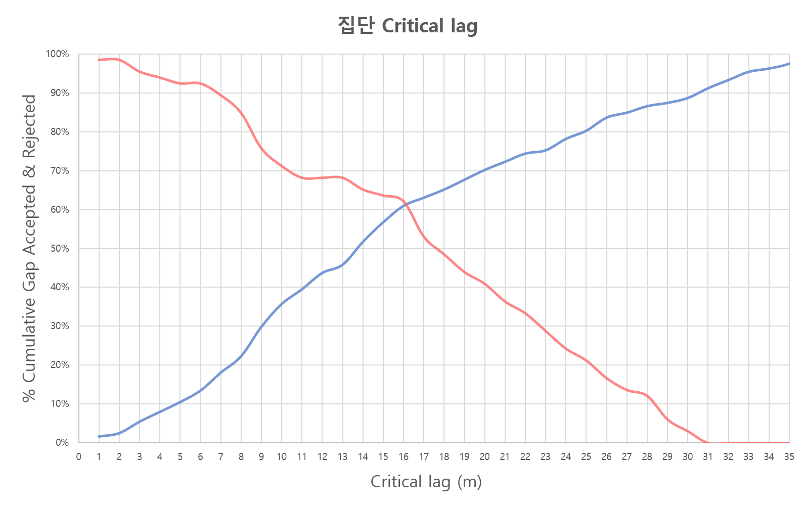
Group / Critical lag / 16.16 m
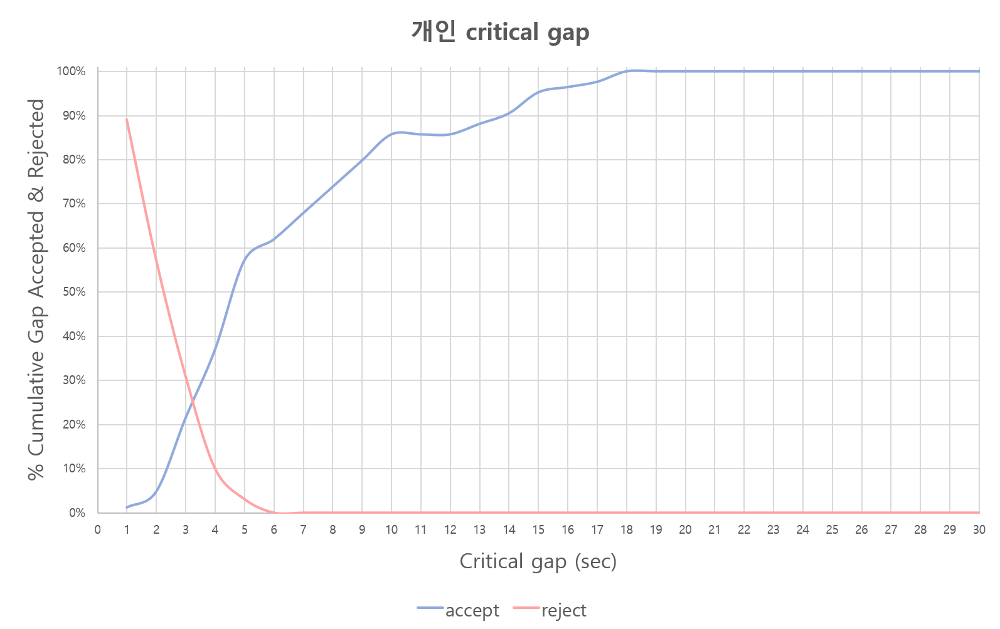
Individual / Critical gap / 3.27 s
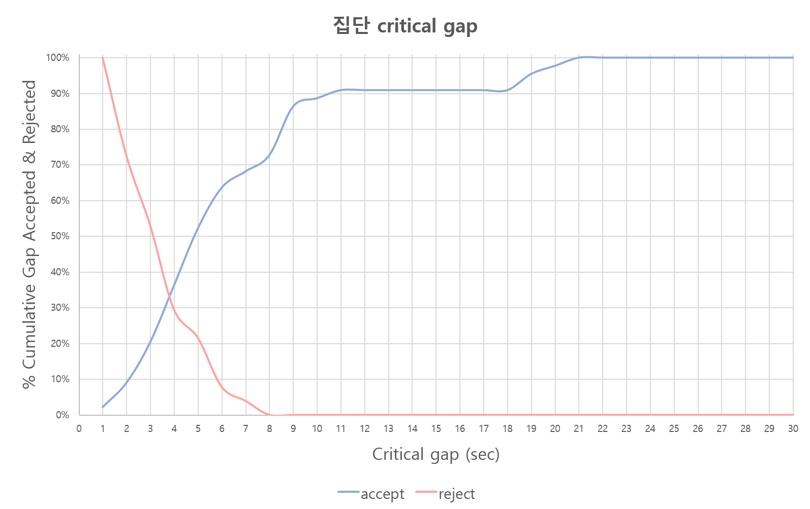
Group / Critical gap / 3.93 s
Additional observation / Individuals reacted more to vehicle speed
At the same vehicle distance, individual pedestrians tended to reject the crossing more often than groups when vehicles were faster. This is a trend in observational data, and we did not interpret it as a causal effect.
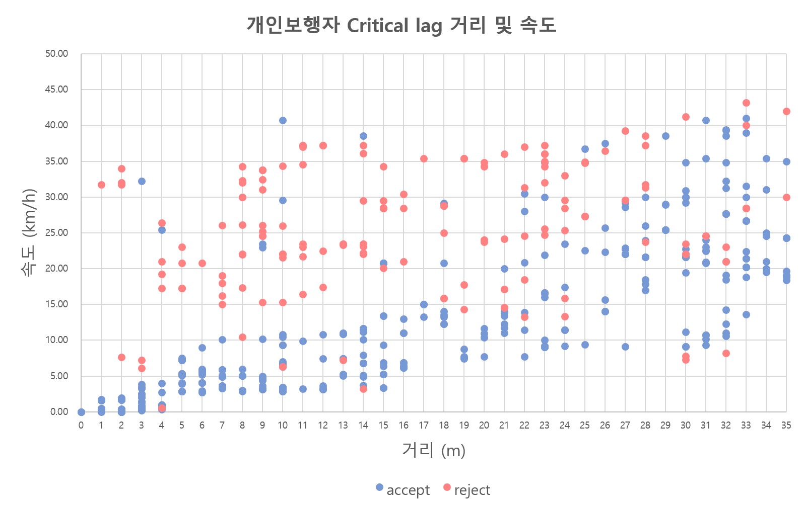
Individual / Vehicle distance (x, m) and speed (y, km/h); blue: accept, red: reject
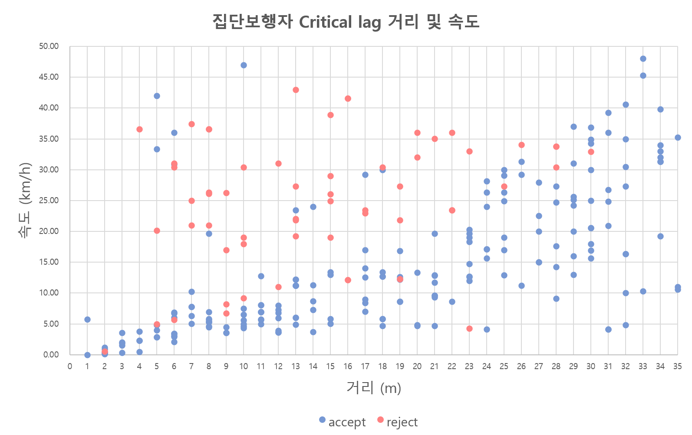
Group / Vehicle distance (x, m) and speed (y, km/h); blue: accept, red: reject
Limitations: the data come from one crosswalk, and vehicle positions were read on a 1 m grid built from on-site landmarks. The study should be extended with more precise measurement equipment, more sites, and different seasons and weather.
04 / RESEARCH OUTPUT
Graduation research and awards
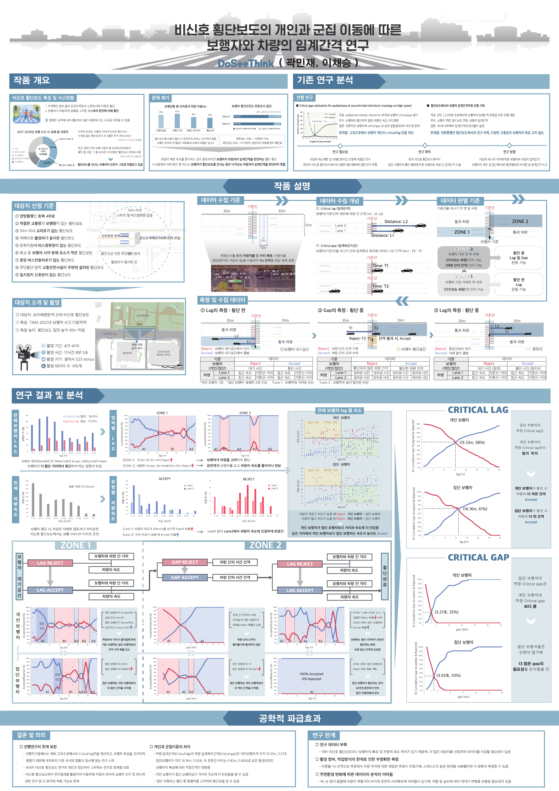
DoSeeThink research poster (Korean). Minjae Kwak, Chaeseung Lee
Research documents
From field observation to critical gaps
We documented the site selection, video-based reading and observation criteria, and the individual vs group results in a research poster and a bachelor’s thesis.
The work won first place and the Korea Transport Institute President’s Award at the 26th Urban Engineering graduation exhibition, and the College of Engineering Dean’s Award at the 2023 CAU Engineering Academic Festival.
This study looked at how people judge vehicle distance and speed before deciding to cross. In graduate school I approached the reverse problem: how cameras and LiDAR should observe a vehicle and estimate its state. The approach of first defining what can be observed and then designing the decision criteria carried over into my sensor-fusion research.